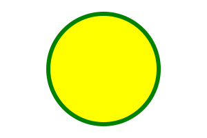

<!--
    SVG <svg >

    É uma marcação, estilo html, mas não é para textos, e sim para fazer imagens.
    Possuimos elementos para gerar formas

    Para entender melhor
    - Imagem rasterizada x Imagem vetorizada

    Benefícios
    - Mais leve
    - Mais detalhada
    - Maior acessibilidade e SEO
    - Pode ser editada via CSS ou atributos

    Desvantagens
    - Pode ser mais complicado para trabalhar
    - Quanto mais complexa a imagem, mais trabalho para o navegador
    - Navegador mais antigos não possuem suporte a essa tag

    Para fotografias, ainda prefira usar imagens rasterizadas (.png, .jpg, .jpeg)
-->

<svg width="300" height="200">
    <circle cx="150" cy="100" r="80" stroke="green"
    stroke-width="6 " fill="yellow"/>
</svg>

<br><br>

<svg width="300" height="200">
    <rect width="100%" height="100%" fill="blue"/>
</svg>

<br><br>

